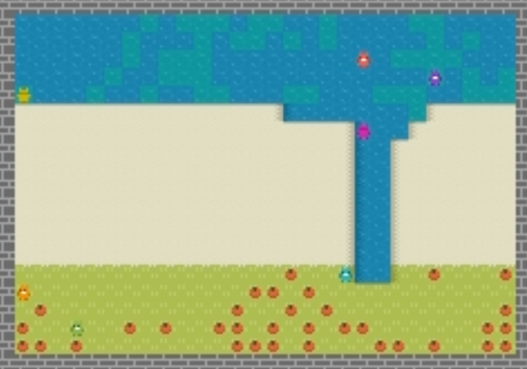
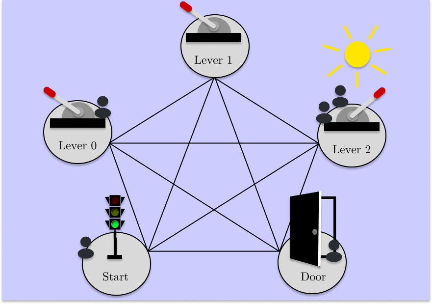
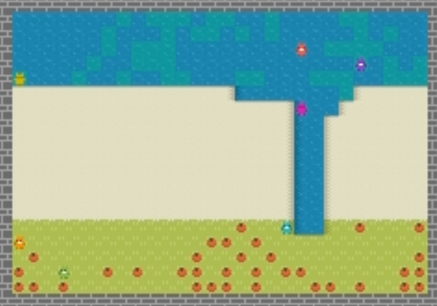
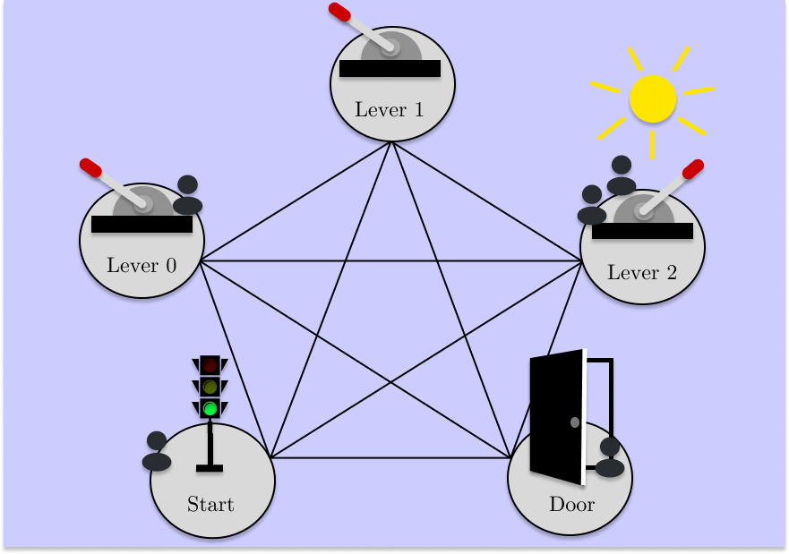
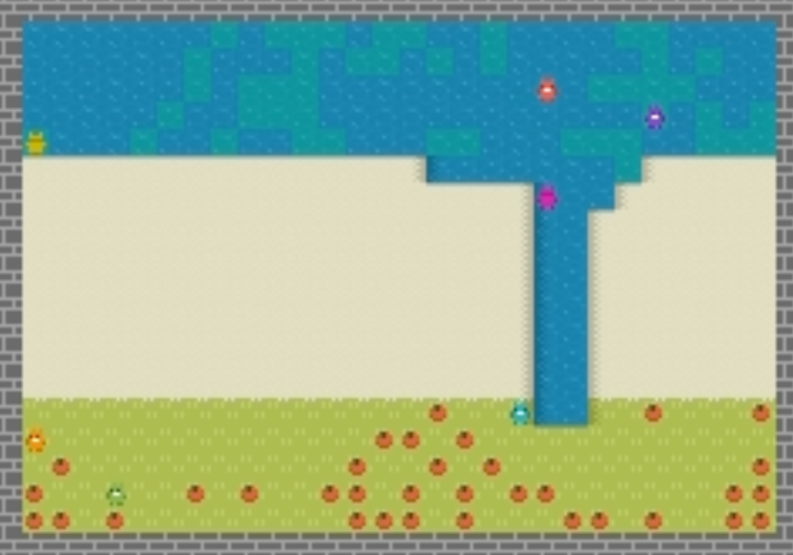
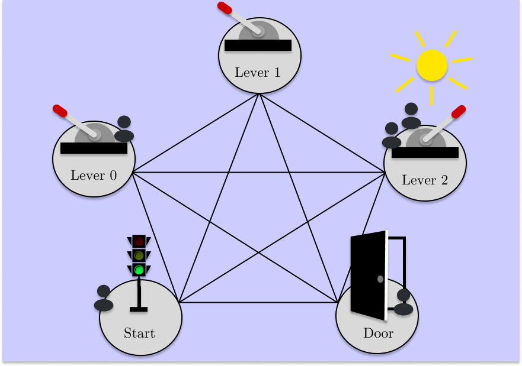
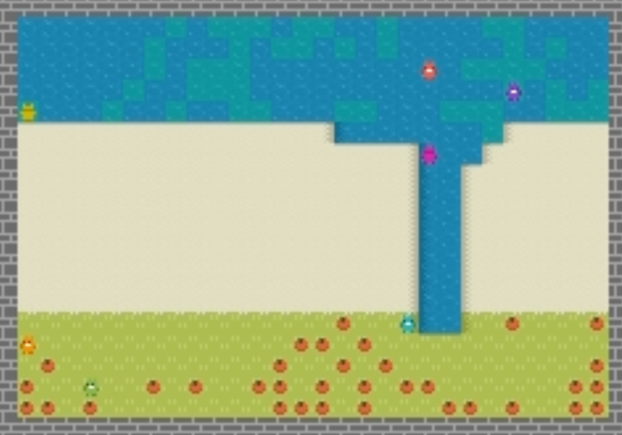
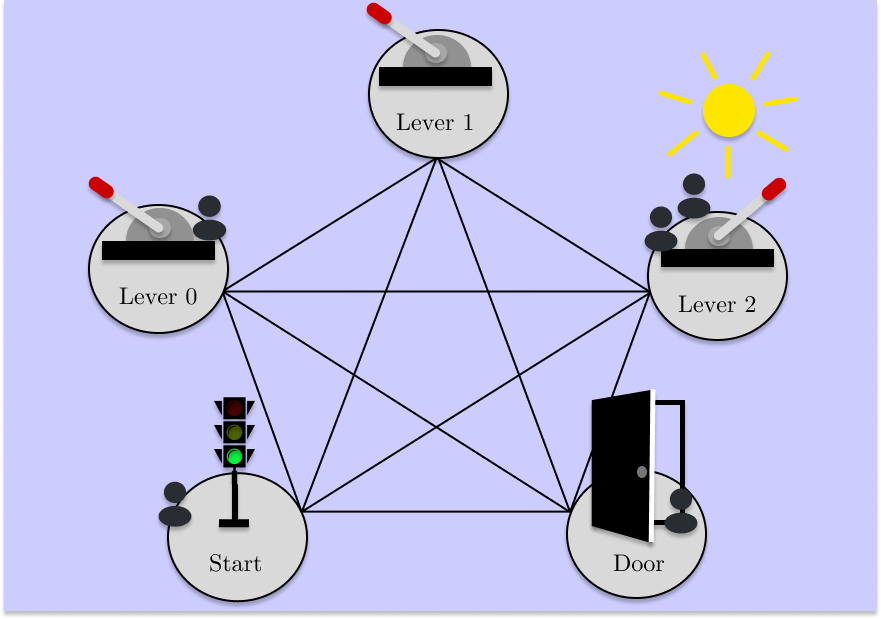

The improvement of economic policymaking presents an opportunity for broad societal benefit, a notion that has inspired research towards AI-driven policymaking tools. AI policymaking holds the potential to surpass human performance through the ability to process data quickly at scale. However, existing RL-based methods exhibit sample inefficiency, and are further limited by an inability to flexibly incorporate nuanced information into their decision-making processes. Thus, we propose a novel method in which we instead utilize pre-trained Large Language Models (LLMs), as sample-efficient policymakers in socially complex multi-agent reinforcement learning (MARL) scenarios. We demonstrate significant efficiency gains, outperforming existing methods across three environments. Our code is available at this link.
Harvest: In this environment, apples grow in patches. Agents are given a reward when they pick an apple. Apples
can regrow, but only if there are still other apples in the patch. This is the source of the social dilemma in this environment;
if two agents are looking at the last apple in a patch, they each have an incentive to pick it and get their reward before the other agent.
This dilemma results in all of the apples being quickly harvested, and the agents are left with no apples to pick. In this environment, the goal of
the principal is to maximize the total number of apples harvested in the simulation by creating three tax rates. These tax rates apply to
the reward signal of an agent that picks an apple based on how many apples they have recently harvested, and splits the taxed reward between all agents.
The improvement of economic policymaking presents an opportunity for broad societal benefit, a notion that has inspired research towards AI-driven policymaking tools. These tools have the potential to process data more effectively than human policymakers, so that the decisions made by humans can be better informed. However, we find thad that current AI-driven policymaking tools are often limited in their ability to quickly make decisions in economic simulations, and also are unable to flexibly incoroporate nuanced information in their decision-making process. For these reasons, we propose using Large Language Models (LLMs) as more efficient policymakers.
Artificial intelligence uses computers to perform tasks that usually require human intelligence. One way this is done is through neural networks, which take in some input, like images or numbers, and produces some output. A popular example of this, depicted on the right, uses a neural network to take in an image of a cat or a dog, and classify which group it belongs to. Large Language Models (LLMs), use a special type of neural network called a transformer to take in text and produce more text. Of course, this is a simplification, but it should suffice for our purposes. You've likely heard of, or even used, some of these LLMs before — OpenAI's ChatGPT models are publicly available LLMs that have made quite the spalsh in recent years.
In order for us to understand one of the advantanges that LLMs have over other methods in AI-based policymaking, we need to talk about how AI is trained. In particular, we are going to talk about how LLMs are trained, and how a neural network using reinforcement learning (RL) is trained. We're choosing to focus on how RL works because that is the way that AI Economist, a leading AI-driven policymaking tool, is trained. In RL, a neural network is trained within some environment (we'll get more into this in a little), by giving it a reward when it outputs something good, and a punishment when it outputs something bad. Each time the neural network updated, it gets a tiny bit better at doing the task it was trained on. This process is powerful, but can take a very long time. LLMs are not trained in an environment, instead using on a massive amount of precollected text data — in the case of ChatGPT, almost all of the internet. When an LLM is trained, it is trained to predict the next word in a sentence, given all of the words that came before it. Again, this is a simplififcation, but should help in understanding this work. Speaking of the work, let's dive in!
Harvest: In this environment, apples grow in patches. Players are given a reward when they pick an apple. Apples
can regrow, but only if there are still other apples in the patch. This is the source of the social dilemma in this environment;
if two players are looking at the last apple in a patch, they each have an incentive to pick it and get their reward before the other player does.
This dilemma results in all of the apples being quickly harvested, and the players are left with no apples to pick. In this environment, the goal of
the policymakers is to maximize the total number of apples harvested in the simulation by creating three tax rates. These tax rates apply to
a player that picks an apple based on how many apples they have recently harvested, and splits the taxed reward between all players. With a good set
of tax rates, the players learn to let apples regrow, thus maximizing the total number of apples harvested.